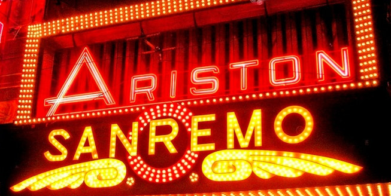

- home
- history
- artists
- sanremo
- about
Sanremo is the place where is held one of the greatest musical competitions called “Italian Song Festival of Sanremo”. It is a competition between new songs that none have heard before. Sanremo Music Festival was the stimulus for Eurovision Song. Sanremo started for the first time on 29-31 January 1951. There were only three singers who participated in the festival: Nilla Pizzi, Achille Toglioni and Duo Fasano. From 1955 and on the festival is displayed live by Rai 1.
